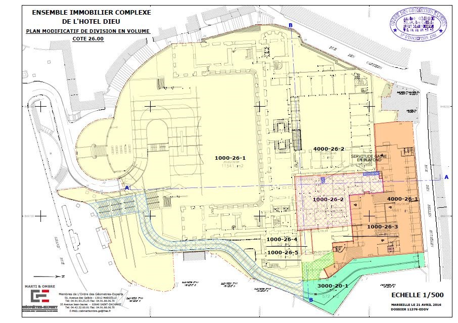

Vous souhaitez faire une Division en Volumes sur un ensemble immobilier simple ou complexe
La division en volumes est un mode de division des ensembles immobiliers
qui a pour principe de déroger au régime de la copropriété en instituant
des droits de propriété en trois dimensions sans partie commune.
Dans le principe la division en volumes est adaptée lorsque les différents
propriétaires ont des statuts, des modes de gestion différents et lorsque
les immeubles ont des destinations divergentes comme pour du domaine
public, une administration, du commerce et du logement.
N’hésitez pas à nous consulter bien en amont de votre projet.

Nous vous accompagnons en partenariat avec la maitrise d’œuvre et le notaire dans la réalisation de votre projet en:
• Etudiant la faisabilité et le bienfondé de ce mode opératoire avec la maitrise d’œuvre, le notaire et le futur gestionnaire
• Analysant les plans, les servitudes, les règles d’urbanisme et surtout le mode de fonctionnement
• Etablissant :
Les plans de descriptif de division.
Le descriptif des volumes.
Le descriptif des servitudes.
Le cahier des charges
Le projet de statuts de l’ASL.
Ces missions permettent de constituer le dossier que le notaire utilisera pour rédiger son acte dans le cadre de la mutation d’un ou plusieurs volumes et/ou pour l’obtention de permis de construire séparés.
Le gestionnaire et les propriétaires possèderont un outil de grande qualité permettant de garantir les droits de chacun et de permettre une gestion équilibrée et juste dans le temps et dans l’espace.
Un projet de division commence par un état des lieux des limites et des droits associés au terrain assiette du projet et par un bornage
contradictoire du périmètre.
Nous pratiquons la division en volume depuis plus de trente ans et avons travaillé sur des dossiers de références comme L’Hotel Dieu, La Rue de La République, Le Futur IKEA de Nice, Euromed Center, Renault Michelet.
Nous avons acquis, grâce à nos clients et à leurs partenaires, une grande expertise dans ce domaine